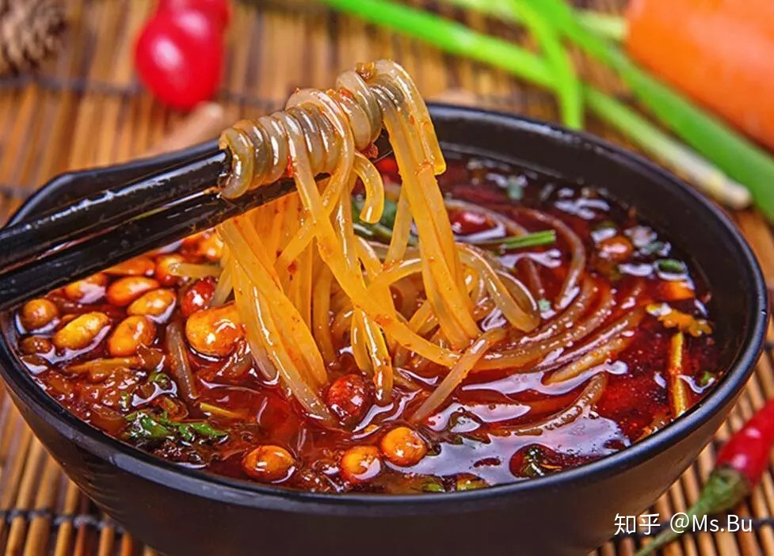
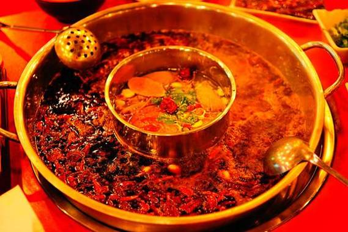
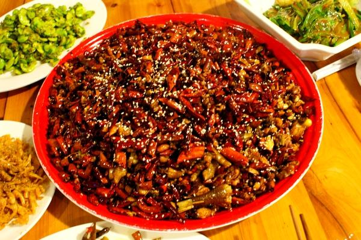
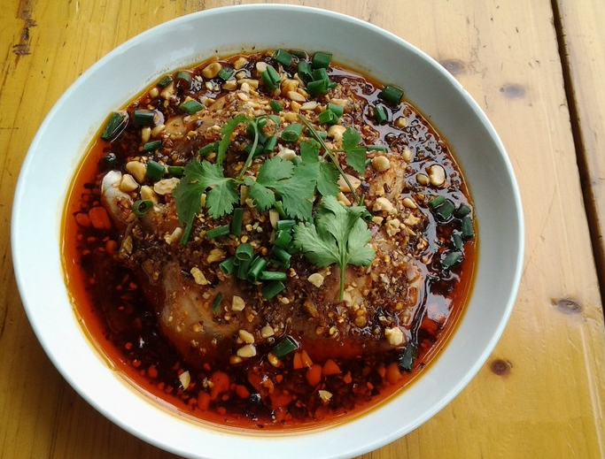
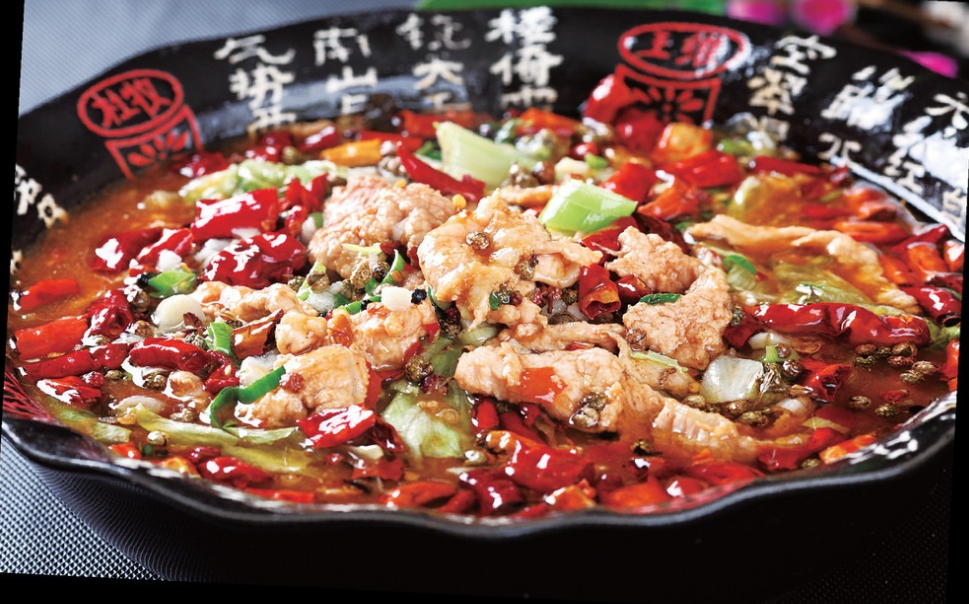

``重庆``
|  | ||
|  |  |  |
|  |
重庆美食的最大特色在于麻辣，火锅和小面是一定得尝尝的，不论是解放碑、洪崖洞、磁器口的美食街，还是街巷深处的小馆子，都令人流连忘返。
重庆美食的最大特色在于麻辣，食辣基本不可避免。如果不能吃辣，要记得再三叮嘱店家少放辣椒。丰富多样的美食，以火锅和小面冠绝。
重庆美食遍布大街小巷，主要集中在解放碑、洪崖洞、磁器口等地，附近都有一条热闹的美食街，完全一站式边玩边吃。
而那些深处老巷子中却又门庭若市的破旧店面，往往就是重庆地道美食的藏匿之地。
``宁波``
宁波，是一个真正的鱼米之乡，地处江南灵秀地，
又濒临海产丰富的东海，真正是吃货们的天堂。
在宁波的街头巷尾，寻常人家，到处都飘散着食物的香气。
宁波三臭、红膏炝蟹、宁波汤圆、雪菜黄鱼……各种不同滋味的美食让你恨不得自己多长几个胃才好。
``贵州``
贵州是个多民族地方，这里山清水秀，多民族居住创造出璀璨的文化，
贵州的美食也是著名于海内外，在当地大力发展旅游业的同时也将本地的美食带到全国各地，
形成了独具一格的贵州特色美食当贵阳的辣子鸡遇上安顺的腊肉血豆腐，当黔东南的腌鱼腌肉相逢黔南的盐酸扣肉……
贵公网安备 52011202003109号 贵州省互联网出版业务许可证：黔新闻出网版准字第046号 黔ICP备20004780号-6
增值电信业经营许可证（ICP）：黔B2-20100012 互联网新闻信息服务许可证: 5212013001
Copyright © DDCPC.CN 当代先锋网 Inc. All rights reserved
贵州日报报刊社主办
违法和不良信息举报电话：0851-86625249
中国互联网 违法和不良信息举报中心：12377 www.12377.cn
涉养老诈骗相关专项举报渠道：0851-86625249